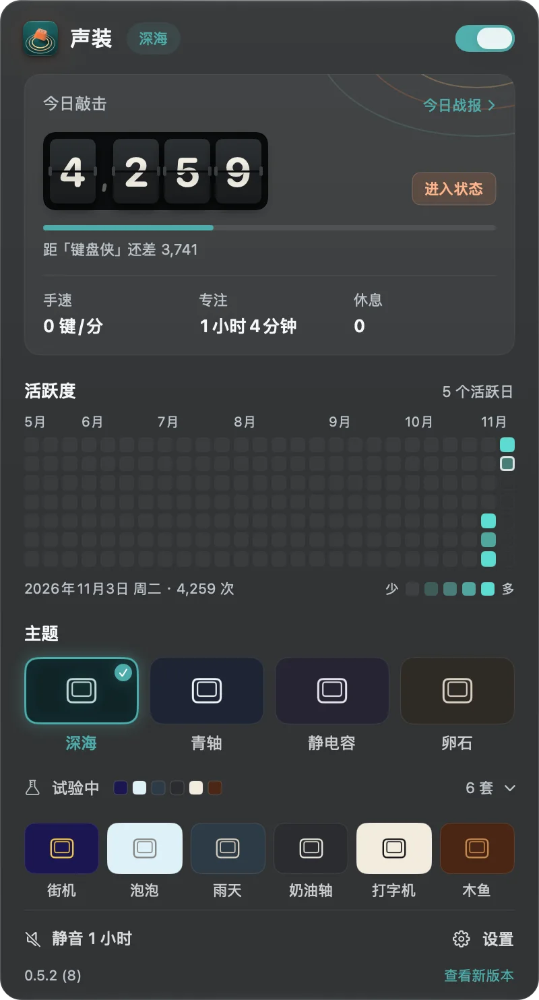
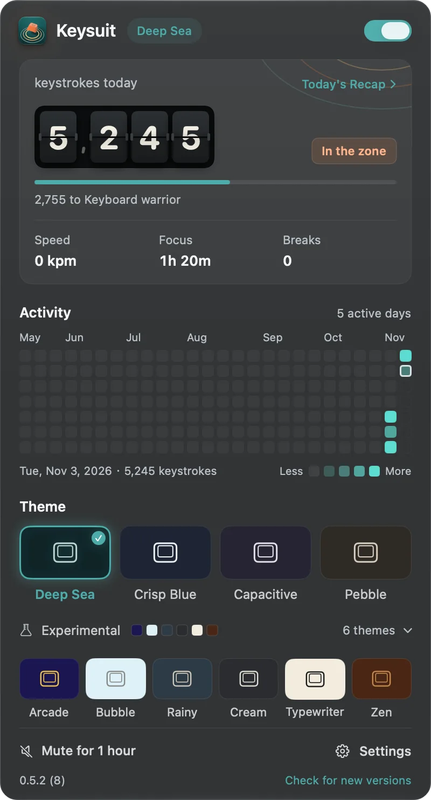

AI 产品思考者
我是 Chris， AI 产品思考者产品经理技术开发者AI 产品思考者
用产品经理的眼光判断什么值得做，用开发者的双手把它做出来。这里收录我关于 LLM、RAG、Agent 和 Voice AI 的思考、项目与方法。
代表作品
给你的 Mac 换一身声音。
Keysuit（声装）是我做的一款 macOS 菜单栏 App：给键盘配上打字音，在本机统计打字量，连续打字太久时提醒你休息。
从需求文档、技术方案、界面设计到官网和这支影片，我完整走了一遍。


产品视角
技术视角
按主题整理的文章、项目和笔记。
其他作品 Quiet Wonder · YouTube Shorts 频道